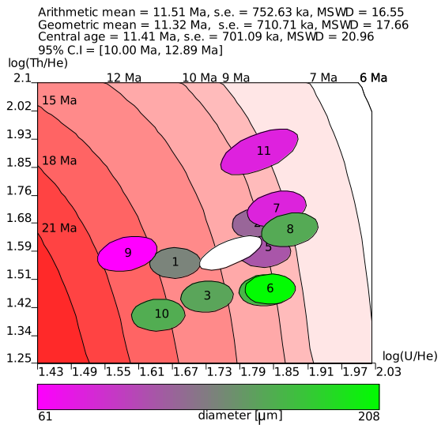
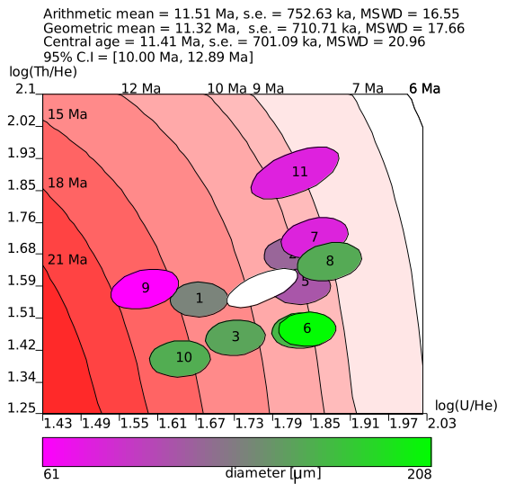

b.
b.
Figure 1: a. the deterministic Bayesian algorithm collects a large number of ages across a regular grid in
logratio space (crosses), and records the corresponding logistic normal likelihood of the data (ellipse); b. 95%
confidence intervals are then simply calculated by looking up the 2.5 and 97.5 percentiles of the resulting
‘posterior distribution’.
 b.
b.
 ,
,